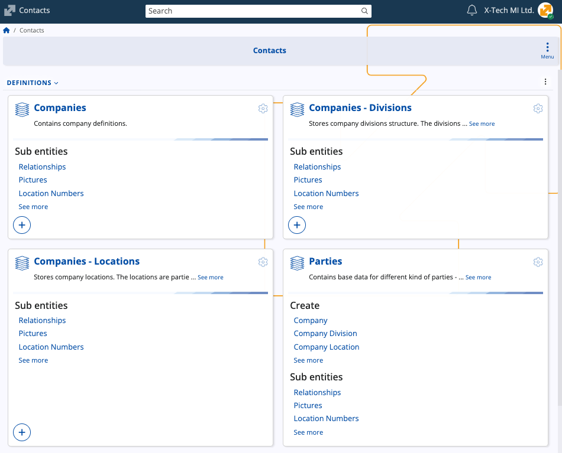
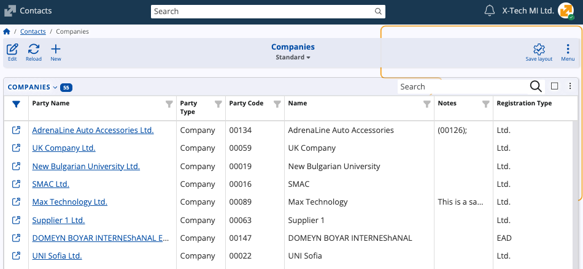
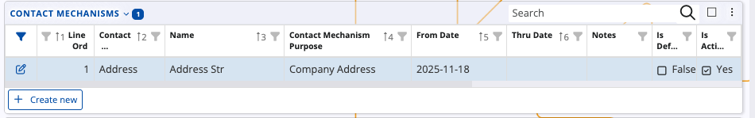
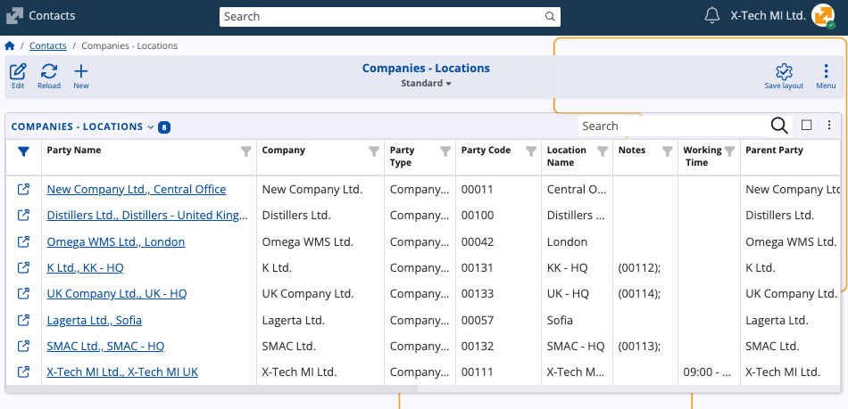
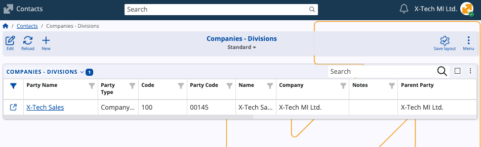
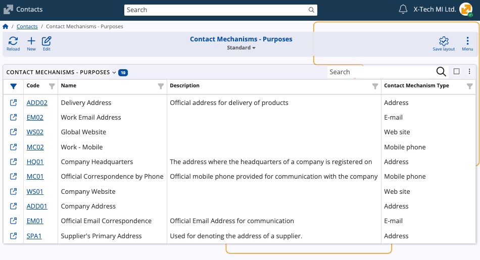
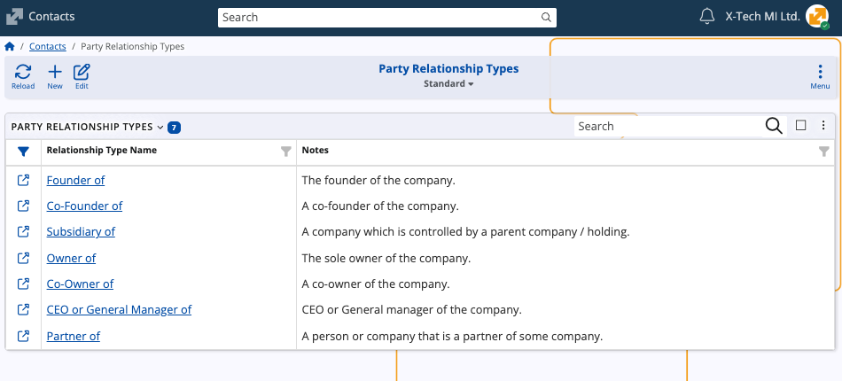

Contacts
The Contacts submodule stores and maintains all contact-related information used across ERP.net. It provides a unified model for representing companies, persons, their internal structure, and the ways in which they relate to one another.
These records serve as foundational references in virtually every document related to operational, financial, and CRM processes.

Key terms
At its core, the module defines two system entities:
- Party – the universal base entity representing any organization or individual.
- Person – a specialized Party that stores personal attributes.
All companies, divisions, departments, locations, suppliers, customers, and natural persons are represented as Parties.
Party
A Party is the fundamental record identifying a company, business unit, or individual in ERP.net.
Every company, division, location, department, supplier, customer, and employee can be represented as a Party.
Person
A Person is a type of Party used to store personal details such as name, nationality, gender, and identification numbers.
Because a Person is a Party, it must have an associated Party record.
Structure
The Contacts submodule supports three parallel and independent structures for organizing companies:
| Structuring mechanism | Description |
|---|---|
| Divisions | Organizational units within a company. |
| Locations | Physical locations such as branches or offices. |
| Departments | Departmental units attached to a company or person. |
These structures can coexist and do not override each other. A company may have multiple divisions, multiple locations, and multiple departments simultaneously.
Divisions and locations are Parties and can therefore be organized hierarchically and related to other Parties.
Companies
The Companies panel represents the company definitions used in all ERP.net modules. A Company is a Party with additional registration and tax-related fields.

Companies typically contain Contact Mechanisms, filled with official addresses, emails, phone numbers, and websites.

Note
You can link specific customers to a company. Customer records are maintained through a separate customer portal.
Locations
The Companies - Locations panel contains physical company locations (e.g., headquarters, branches, warehouses).
Each location is a Party and may have its own contact mechanisms, working time and location-specific identifiers.

Divisions
The Companies - Divisions panel lists internal business divisions. A division is a Party and can be placed under a parent company or another division.

Parties
The Parties panel holds all Party records regardless of type. This includes companies, persons, customers, divisions, suppliers, and any other party types.

Persons
The Persons panel stores all Person records used across the system. Each Person has a related Party and may be linked to a company, department, or another structure.

Contact Mechanisms
The Contact Mechanisms – Purposes panel describes user-defined purposes for each contact mechanism type.
Each purpose is linked to a Contact Mechanism Type (address, email, mobile phone, etc.) and appears as a selectable option when adding contact mechanisms to Parties or Persons.
This enables companies to classify contact details precisely, e.g.:
- Delivery Address
- Work Email Address
- Company Headquarters
- Official Correspondence by Phone

Party Relationship Types
The Party Relationship Types panel defines allowed relationship classifications between Parties.
Examples include:
- Founder of
- Co-Founder of
- Owner of

Note
The screenshots taken for this article are from v.26 of the platform.